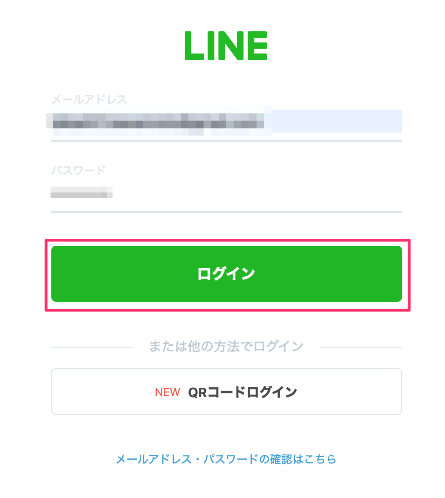
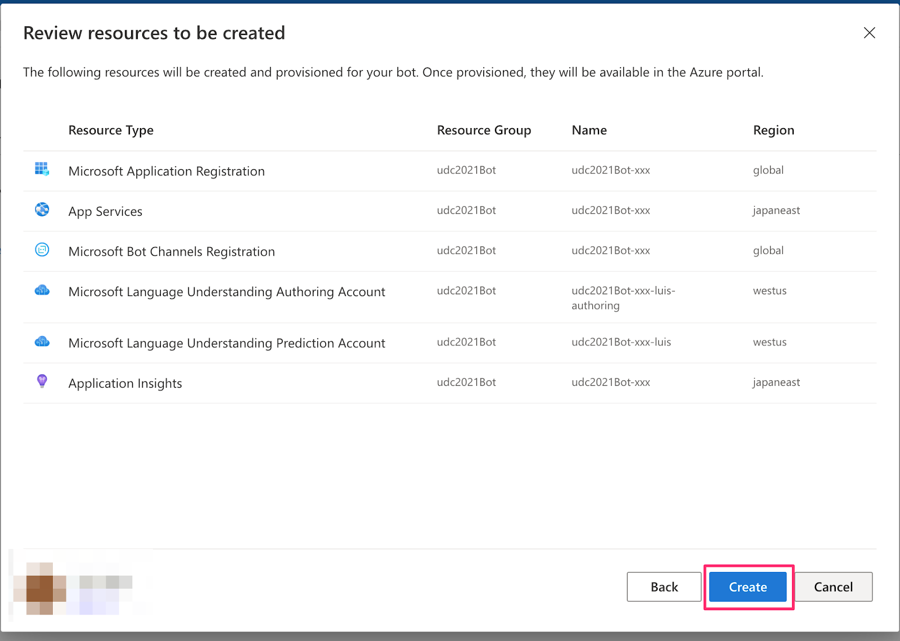
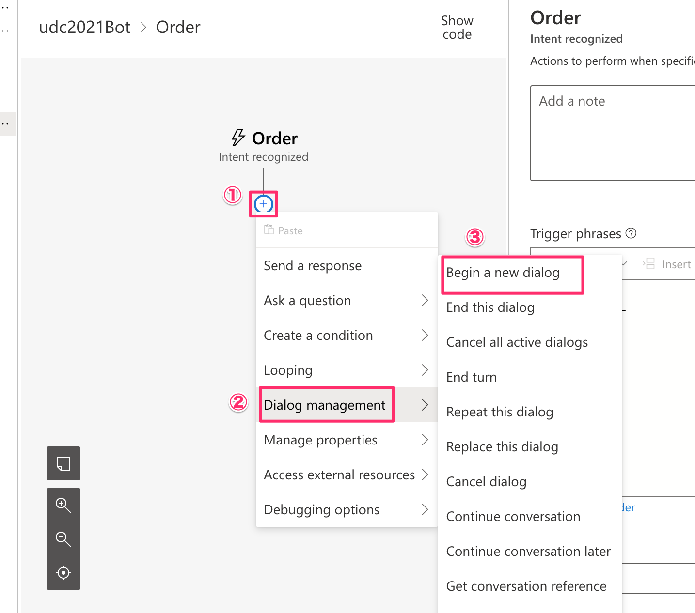
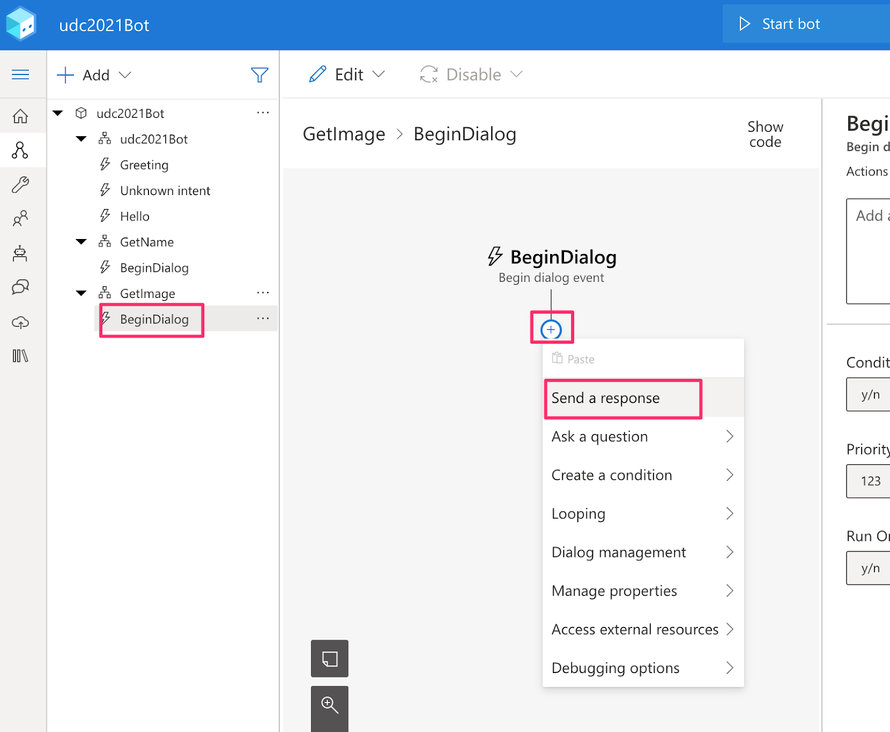
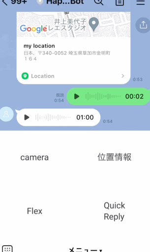

概要
LINE Botを作りつつ、Messaging API(および周辺の技術)の基本的な使い方を学んでいただければと思います！
当日の持ち物
- LINEがインストール済みのスマホ
- ChromeがインストールされたPC（Chromeのバージョンは最新のものを使っていただければと！）
事前準備
- Azureアカウント作成
- LINEアカウント作成(こちらのサイトでログインできるかどうかを確認ください)
- Bot Framework Comporserインストール
- .NET
- Node.js
使用するサービス・ツール
- Bot Framework Comporser
- Microsoft Azure
- Azure Bot
- App Service
- Language Understanding(LUIS)
- LINE
構成図

注意事項
若干、Microsoft Azureの課金が発生する可能性があります。
チャネルの作成スタート
https://developers.line.me/ja/services/messaging-api/ にアクセス。
「今すぐはじめよう」のボタンを押して進めていきましょう。
「LINEアカウントでログイン」を押してください。
LINEのログインを求められるのでログインしてください。

チャネルの種類
Messaging APIになっているか確認します。
プロバイダ
既にプロバイダーを作っている場合 → 利用するプロバイダーを選択しましょう。
初めて → 新規プロバイダー作成を選択しプロバイダー名を入力しましょう。
（LINEという文字は含められません。）
チャネルアイコン
チャネルアイコンを登録しましょう。（今回は必須ではありません）
チャネル名、チャネル説明
下記を入力しましょう。
チャネル名：「udc2021Bot」
チャネル説明：「udc2021Botです。」
大業種、小業種
メールアドレス、プライバシーポリシーURL、サービス利用規約URL
メールアドレスを確認しましょう。
プライバシーポリシーURLとサービス利用規約URLは入力しないで大丈夫です。
作成ボタン
下記２点の利用規約にチェックをして「作成」ボタンを押しましょう。
「OK」を押しましょう。
「同意する」を押しましょう。

LINE公式アカウント(LINE Bot)と友だちになる
QRコードで友だち追加
「Messaging API設定」タブに移動し、QRコードを読み取って、友だち追加をしましょう。
チャネルシークレット、アクセストークンの取得
「チャネル基本設定」タブからチャネルシークレットを、「Messaging API設定」タブからアクセスキーをそれぞれ取得しメモします。_φ(･_･
- チャネルシークレット
- アクセストークン
応答モードをOFFにする
LINE Official Account Manager 画面にアクセスして、Botの「応答モード」設定をOFFにします。（デフォルトの設定はONになっており、メッセージを送るたびにデフォルトのメッセージが返ってきてしまうため）

Install作業（事前準備）
node.js インストール
node.js インストール確認
npm –versionたたく
新規作成の開始
「＋Create new」から作ります。
「C#」、「Empty Bot」を選択し、Nextボタンを押しましょう。

Nameに「udc2021Bot」と入力し、「Create」ボタンを押しましょう。
言語の設定
日本語を処理できるように言語を日本語に変更します。

japaneseと検索し、Japanese(Japan)を選択、When...にもチェックをつけDoneをクリックします。
Japanese(Japan)にカーソルを持っていき、Set it as default languageをクリックします。
日本語専用のbotの場合Englishを残すと不具合が生じる場合があるので削除します
Advanced Settings View (json) をオンにして、「defaultLocale」を「ja-jp」に書き換えます。
挨拶 Botの作成
挨拶ダイアログを作成します。
①をクリックして、「＋Add a dialog」を選択します。

ダイアログのNameに「GetHello」を入力し、OKを押しましょう。
①に移動し、「Send a response」を追加します。
Responsesに下記を入力します。
オウム返し「${turn.activity.text}」
ユーザーと同じ挨拶を返します。

次に挨拶ダイアログを呼び出すトリガーを作成します。
自然言語処理機能（LUIS）を使って、ユーザーの意図を取得します。
①をクリックし、「＋Add new trigger」を選択します。
What is the type of this trigger? に「Hello」と入力します。
Trigger phrasesに下記を入力し、Submitをクリックします。
- おはよう
- おはようございます
- こんにちは
- こんばんは
- さようなら順番通りにクリックし、「Begin a new dialog」を作成します。
ここで「GetHello」を選択し、挨拶ダイアログを呼び出します。
エラーを修正します。
LUISの設定をします。
Set up Language Understandingをクリックし、セットアップをします。
Azureへサインインします。
使用するサブスクリプションを選択します。

下記のように設定します。
Resource group name
udc2021Bot
Region
West US
Language Understanding resource name
udc2021Bot-xxx-luis (xxxには一意になるように名前等)
42 | 生命、世界、そして万物についての究極の疑問の答え。 |
FTL | 超光速通信。4000～5000光年の距離ならばリアルタイムに近い通信が可能。 |
1 | 1 | 1 |
1 | 1 | 1 |
1 | 1 | 1 |
テスト
作ったものを確認しましょう。
「Open Web Chat」を押しましょう。

Type your messageに作成したtriggerでTrigger phrasesに設定したどれか、または近いものを入力すると、挨拶を確認できます。確認できたら、右上の「×」で閉じます。
Azureへ展開
まず Azure リソースの作成を行います。
Nameに「udc2021Bot」、Publishing targetに「Publish bot to Azure」を設定し、Nextを押しましょう。
Nextを押しましょう。

下記のように設定をしてNextを押しましょう。
Resource group
udc2021Bot（LUISで使用したものと同じ）
Name
udc2021Bot-xxx（xxxはLUISで入力したものと同じ）

画面下の方にある、使用しないオプションを外します。Nextを押しましょう。
Createを押しましょう。

リソースが作成されたら、Azureへ展開します。
Azureポータルサイト(https://portal.azure.com/#home)へ移動し、作成したリソースグループのApp Serviceを選択します。プランを無料プランに変更しましょう。
App Serviceプランをクリックしましょう。
価格レベルを「F1」に変更し、適用をクリックしましょう。
次に作成したリソースグループのAzure ボットを選択します。
Webチャットのテストで確認します。
何も出てこない場合は、やり直すをクリックか、少し時間を置くか、もう一度Azureへ展開をしてみてください。
LINEと接続
チャンネルに移動し、「LINE」をクリックします。
Messaging API チャネルでメモしたチャンネルシークレットとチャンネルアクセストークンを入力します。
WebhookのURLをコピーし、保存をクリックします。
LINE Developersのコンソール画面に戻って、「Messaging API設定」タブのWebhook URLに上記で取得したURLを設定します。これでLINEのBotを動かす準備は全て整いました！
動作確認
さっそく動かしてみましょう。トーク画面からBotに対してメッセージを送るとメッセージが送られてきたと思います！
コーヒーオーダーBotの作成
挨拶Botと同じようにダイアログを作成していきます。

Nameに「GetOrder」を入力し、OKをクリックしましょう。
①に移動し、「Ask a question -> Number」を追加しましょう。
Responsesに下記を入力します。
コーヒーをいくつ注文しますか？

User inputに移動し、Propertyに下記を入力します。
user.ordernum

0が入力された際のチェックと返すメッセージを設定します。
this.value >= 1
0以外を入力してください

注文した数によって、在庫なしということを応答します。
「Create a condition -> Branch: if/else」を追加しましょう。

Write an expressionを選択しましょう。
Conditionに下記を入力します。
user.ordernum<3

False側にSend a responseを追加し、下記を入力します。
申し訳ありませんが、在庫がありません。

True側に「Ask a question -> Multi-choice」を追加します。
ユーザーに選択肢から回答してもらえます。

Bot responseに下記を入力しましょう。
ホットかアイスのどちらにしますか？

User inputに移動し、Propertyに下記を入力します。
user.orderhotice

Array of choicesでAdd newをクリックし、下記を入力します。
ホット
アイス

Send a responseを追加し、下記を入力します。
${user.orderhotice}コーヒを${user.ordernum}つですね。ご注文ありがとうございました。

最初の箇所に変数を初期化します。

Add newをクリックして、Property に下記、 Valueには何も入れません。
user.ordernum
user.orderhotice

次にコーヒーオーダーダイアログを呼び出すトリガーを作成します。
①をクリックし、「＋Add new trigger」を選択します。
What is the type of this trigger? に「Order」と入力します。
Trigger phrasesに下記を入力し、Submitをクリックします。
- コーヒーください
- コーヒーにします
- コーヒーです
- コーヒーが飲みたい
- コーヒーをお願いします順番通りにクリックし、「Begin a new dialog」を作成します。

ここで「GetOrder」を選択し、コーヒーオーダーダイアログを呼び出します。
テストを行います。
再度、Azureへ展開します。

LINE Official Account Manager 画面でリッチメニューの設定
LINE公式アカウントの管理画面にアクセスし、リッチメニューを作成していきます。まずは「表示設定」の項目を入力し、その後テンプレートの選択を行います。（ここでは４つのフレームに別れたテンプレートを選択します。）


次にリッチメニューに使用する画像を作成します。「画像を作成」ボタンから、４つのフレームに対してそれぞれテキストを入力し、最後に右上の適用ボタンを押してください。
場所 | 入力するテキスト |
左上 | camera |
右上 | 位置情報 |
左下 | Flex |
右下 | Quick Reply |

次にアクションの項目を下記の情報を参考に埋めていきます。最後に保存ボタンを押すのをお忘れなく。
番号 | タイプ | 入力欄 | ラベル |
A | リンク | https://line.me/R/nv/camera/ | camera |
B | リンク | https://line.me/R/nv/location/ | location |
C | テキスト | flex | なし |
D | テキスト | quick | なし |

LINE公式アカウント(LINE Bot)上は下記のようになります。
（参考）Messaging APIでのリッチメニューを作成
リッチメニューはMessaging APIでも作成でき、さらに柔軟な対応が可能です。今回のハンズオンでは対象外としますが、下記に参考情報を記載いたします。
URLスキームを使うとカメラや位置情報などが起動できたりします、いくつか用意されていますので試していきましょう。
カメラの起動
リッチメニュー左上の「camera」をタップしてください。カメラが起動します。
位置情報の起動
リッチメニュー右上の「位置情報」をタップしてください。位置情報が起動します。
LINEでは様々なメッセージ形式を扱うことができます。
画像メッセージを扱う
まず、画像メッセージを送信するダイアログを作成します。

Nameに 下記を入力しOKを押しましょう。
GetImageBeginDialogからSend a reaponseを追加します。

Show codeをクリックします。
下記コードを貼り付けます。
[Activity
Text='image',
ChannelData=${Image(first(turn.activity.attachments).contentUrl)}
]
Bot responseのGetImageに下記コードを追加します。
# Image (originalContentUrl)
- ${json(concat('{"type": "image", "originalContentUrl":"',originalContentUrl,'", "previewImageUrl": "',originalContentUrl,'"}'))}
カメラを起動して写真を撮るか既に撮った写真を選択するかで、画像をトーク画面に投稿すると送った画像をそのまま返すことができます。
位置情報メッセージを扱う
画像メッセージと同じ手順で作成します。
位置情報メッセージを送信するダイアログを作成します。
Nameに下記を入力します。
GetLocationBeginDialogから追加した「Send a reaponse」に下記を入力します。
[Activity
Text='location',
ChannelData=${Location(turn.activity.channelData.message.address,turn.activity.channelData.message.latitude,turn.activity.channelData.message.longitude)}
]Bot Reaponse
# Location (address, latitude, longitude)
- ${json(concat('{"type": "location", "title": "my location", "address": "',address,'","latitude": ',latitude,', "longitude": ',longitude,'}'))}位置情報をトーク画面に投稿すると、同じ位置情報メッセージを返すことができます。
音声メッセージを扱う
画像メッセージと同じ手順で作成します。
音声メッセージを送信するダイアログを作成します。
Nameに下記を入力します。
GetAudioBeginDialogから追加した「Send a reaponse」に下記を入力します。
[Activity
Text='audio',
ChannelData=${Audio(first(turn.activity.attachments).contentUrl)}
]Bot responseに下記コードを追加します。
# Audio (originalContentUrl)
- ${json(concat('{"type": "audio", "originalContentUrl": "',originalContentUrl,'","duration": "60000"}'))}マイクから音声を投稿すると音声メッセージを返すことができます。

Flex Messageを扱う
画像メッセージと同じ手順で作成します。
Flex Messageを送信するダイアログを作成します。
Nameに下記を入力します。
GetFlexBeginDialogから追加した「Send a reaponse」に下記を入力します。
[Activity
Text='flex',
ChannelData=${Flex()}
]Bot responseに下記URLの中身のコードを追加します。
https://gist.github.com/mochan-tk/c4a405ee9f0b73dc971afa2da7e15c69リッチメニューの左下をタップして、「flex」というテキストメッセージを投稿します。するとちょっとリッチなUIを返すことができます。これがFlex Messageです。Flex Message Simulator が用意されており、レイアウトを簡単にカスタマイズすることができます。（詳細はコチラを参照ください。）

Quick Replyを扱う
画像メッセージと同じ手順で作成します。
Quick Replyを送信するダイアログを作成します。
Nameに下記を入力します。
GetQuickReplyBeginDialogから追加した「Send a reaponse」に下記を入力します。
[Activity
Text='quickReply',
ChannelData=${QuickReply()}
]Bot responseに下記コードを追加します。
# QuickReply
- ${json(QuickReplySrc())}
# QuickReplySrc
- ```{
"type": "text",
"text": "ステッカー欲しいですか❓YesかNoで答えてください, もしくは素敵な写真送って❗️",
"quickReply": {
"items": [
{
"type": "action",
"action": {
"type":"postback",
"label":"Yes",
"data": "sticker",
"displayText":"ステッカーください❗️"
}
},
{
"type": "action",
"action": {
"type":"message",
"label":"No",
"text":"不要。"
}
},
{
"type": "action",
"action": {
"type": "camera",
"label": "camera"
}
}
]
}
}```クイックリプライを使うとユーザは簡単に返信を行うことができます。
Stickerを扱う
画像メッセージと同じ手順で作成します。
Stickerを送信するダイアログを作成します。
Nameに下記を入力します。
GetStickerBeginDialogから追加した「Send a reaponse」に下記を入力します。
[Activity
Text='sticker',
ChannelData=${Sticker(11537,52002735)}
]Bot responseに下記コードを追加します。
# Sticker (packageId, stickerId)
- ${json(concat('{"type": "sticker", "packageId": ',packageId,', "stickerId": ',stickerId,'}'))}先ほどのクイックリプライで「Yes」をタップすると、スタンプを送信することができます。
それぞれのダイアログを呼び出す
画像や位置情報などにはテキストが含まれないのでUnknown intentで作成します。
手順通りにクリックし、Branch: Switch(multiple options)を追加します。

conditionとcasesに下記を入力します
turn.activity.channelData.type
message
postback

message配下にBranch: Switch(multiple options)を追加します。
conditionとcasesに下記を入力します
turn.activity.channelData.message.type
image
location
audio
text

image配下にBegin a new dialogを追加します。
ここで「GetImage」を選択します。
locationとaudio配下にもBegin a new dialogを追加し、それぞれ「GetLocation」、「GetAudio」を選択します。
text配下にBranch: Switch(multiple options)を追加します。
conditionとcasesに下記を入力します
turn.activity.channelData.message.text
flex
quick

flex配下にBegin a new dialogを追加し、「GetFlex」を選択します。
postback配下にBranch: if/elseを追加します。

conditionに下記を入力します
turn.activity.channelData.postback.data=='sticker'

True側にBegin a new dialogを追加し、「GetSticker」を選択します。

最下部にある「Send a response」を移動させます。
クリックし、Edit -> Cut をクリックします。Ctrl+xでもできます。

text -> default 配下に貼り付けます


課金が気になる方は、下記のコマンドを実行してリソースグループごと作成したAzureのリソースを削除してください。
az group delete --name ${group_name}